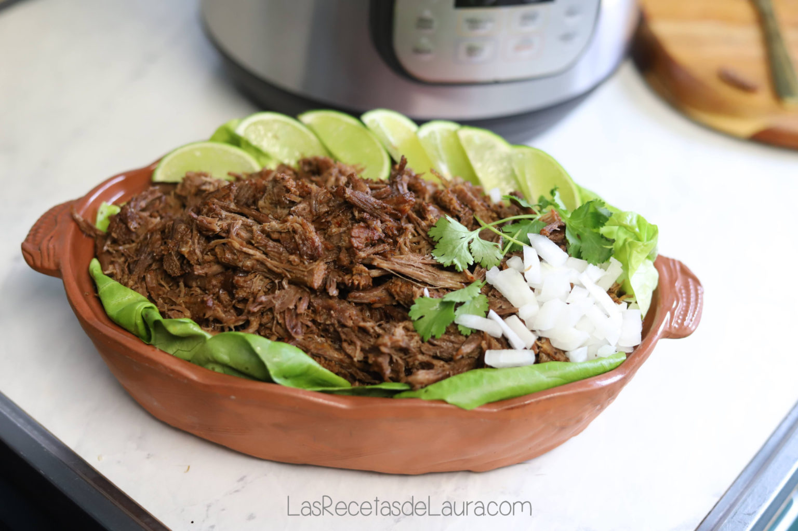

Mexican Barbacoa

(Recipe makes 6)the best Beef Barbacoa Recipe
INGREDIENTS
- 4 pounds Chuck roast or Pot roast chuck roast
- 2 guajillo pepper
- 1 Red hot chili (chile de arbol)
- ½ teaspoon of Cumin
- 1 spoon of Oregano
- ½ Onion
- 5 Garlic cloves
- 1 spoon Salt
- 6 whole black pepper
- 3 Bay leaves
Toppings(optional)
- Mexican Beef barbacoa, goat or lamb barbacoa
- Finely chopped cilantro
- Onion chopped into small squares
- Salsa Roja
- Avocado (optional)
- Pico de gallo (optional)
- lime
- Corn or flour tortillas
INSTRUCTIONS
- Toast these ingredients well, taking care that the chilies do not burn. They toast fast so remove them before the onion and garlic.
- Put all the toasted ingredients in the blender together with 1 tsp of oregano 1/2 tsp of cumin, 1 tbsp of salt and 3 bay leaves. Add 1 cup of water and blend everything very well.
- the sauce you created marinate the meat for one night in the refrigerator. If you don't have time, don't worry, I prepared it without marinating and it is delicious, so if you marinate it, it will be gourmet (almost like barbacoa de hoyo)
- Put the meat in the Instant pot together with the marinade and activate the Meat / Stew button in your Instant Pot and let it cook.
- Once it is finished and you can open the pot, let the meat cool a little and crumble it. There you have your healthy barbacoa… do you want to know the secret of the barbacoa street tacos? They actually defry the beef.
- Do you want to take your barbacoa tacos to another level of flavor (and cholesterol) ? Drop some oil in the pan and defry the shredded beef. There you have the most amazing and authentic mexican barbacoa homemade by yourself! Awesome!